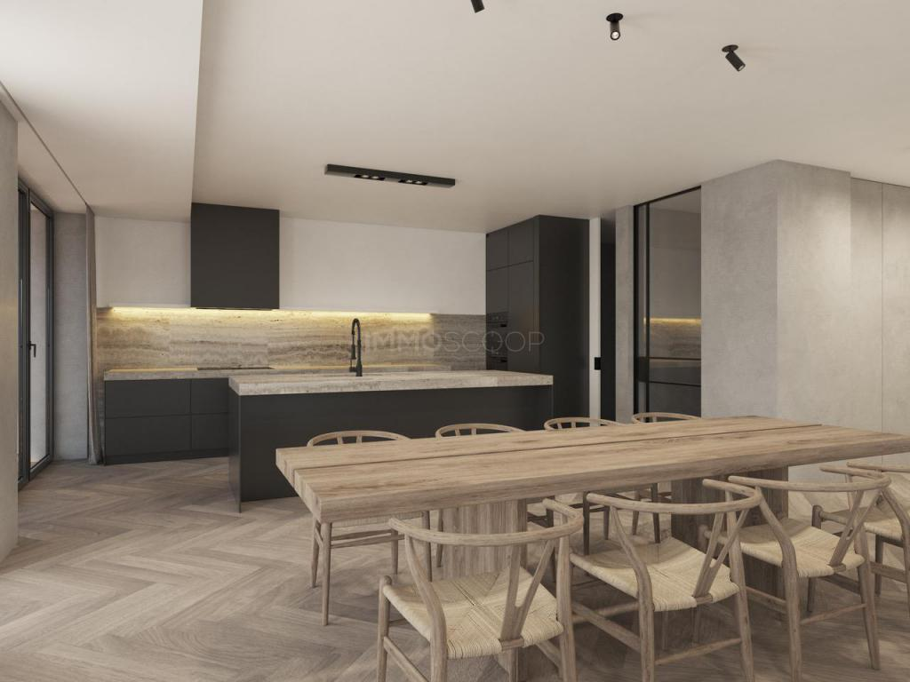
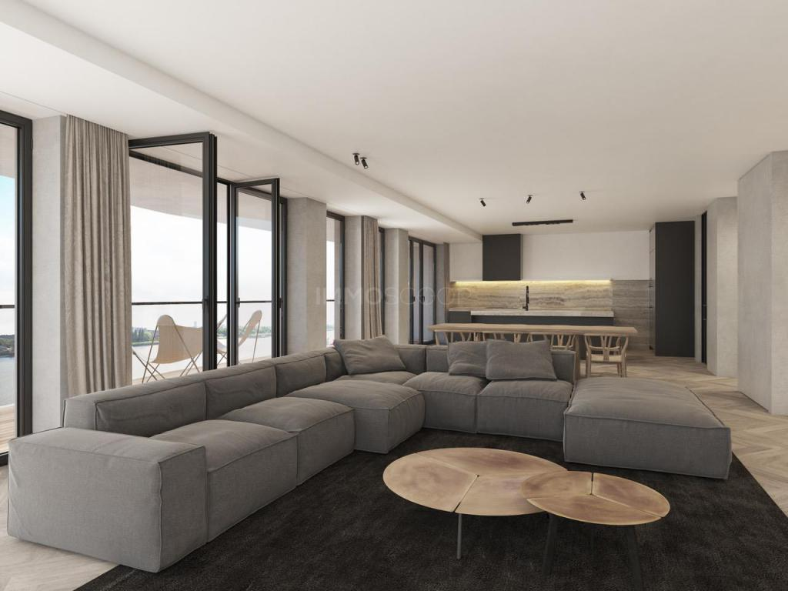
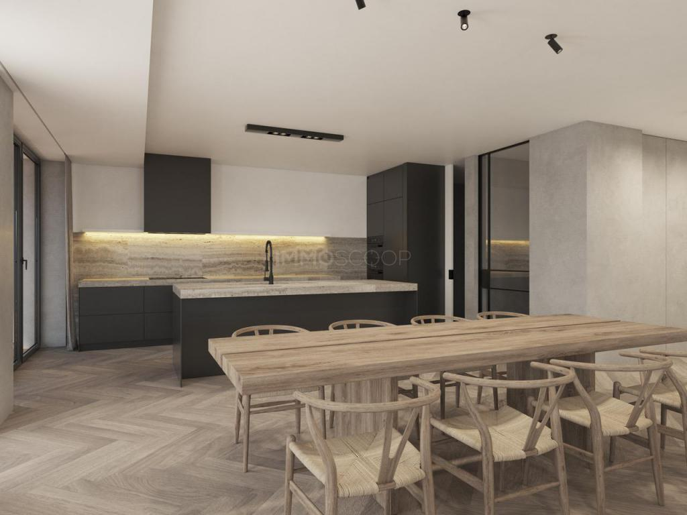
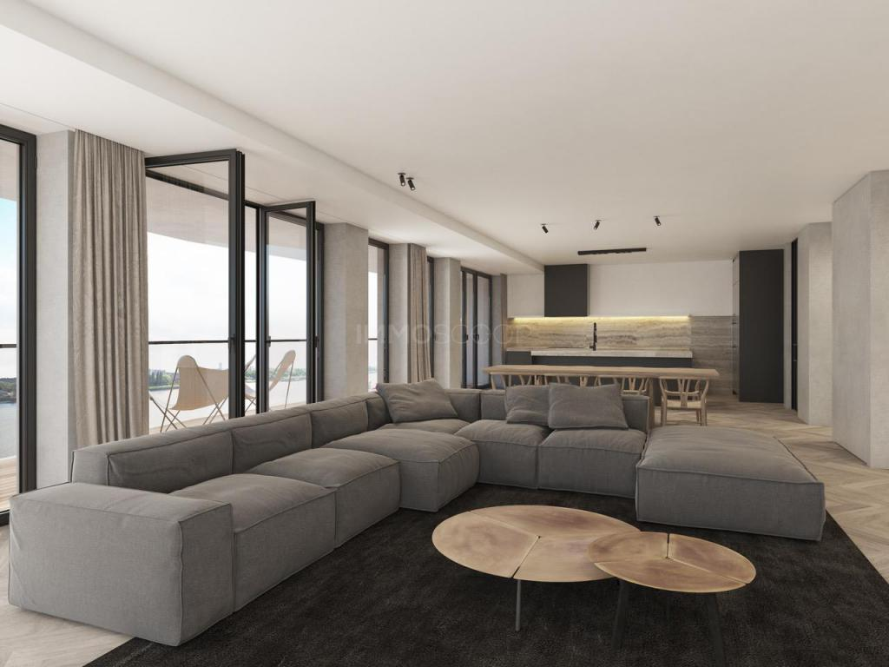

APPARTEMENT TE KOOP ANTWERPEN
LH-code: 51334
LH-code: 51334
 





Beschrijving
Appartement op het NIEUW ZUID met frontaal Scheldezicht.
Volledig ingericht enluxueus 3 slaapkamer appartement van ca. 233 m2 met ruim doorlopend terras en parkeergelegenheid gelegen op het Zuid.Het appartement biedt een prachtig zicht op groen en over de Schelde en is gelegen in residentie Scheldekaai naar een architectuur van Baumschlager-Eberle. Residentie Scheldekaai maakt deel uit vansite 'Nieuw Zuid'.
Indeling: Inkomhal voorzien van vestiaireruimte. Riante en uiterst zonnige leefruimte voorzien van een zitruimte. Gezellige tv-hoek. Een moderne, open keuken van Bulthaup, uitgerust met kookeiland en voorzien van de gebruikelijke toestellen. Aanpalend aan de keuken bevindt zich een bijkeuken en bergruimte met aansluitingen voor een was- en droogautomaat. Mastersuite bestaande uit een slaapgedeelte, een ruime dressing en een badkamer Twee ruime slaapkamers voorzien van ingemaakte kastenwand. Tweede badkamer uitgerust met inloopdouche en wastafel. Apart toilet. Het appartement is volledig omgeven door goed georiënteerde terrassen.
Bijzonderheden: Vloerverwaming en parket in het volledige appartement. 2 autostaanplaatsen te koop aan 35.000,- euro /stuk - kelderberging inbegrepen in de prijs. Zowel het historische stadscentrum als de voornaamste autosnelwegen rond Antwerpen bevinden zich in de onmiddellijke omgeving. Scheldekaai maakt deel uit vansite 'Nieuw Zuid', een duurzame en groene woonwijk gelegen op het Zuid nabij de Scheldekaaien. Hier vindt u een gevarieerd aanbod van residentieel wonen, winkels, kantoren, horeca en openbare voorzieningen in combinatie met groenpartijen, een groot park, pleinen en wandelwegen.
Graag meer Info?
Eigenschappen
| Type | Appartement |
| Ligging | Antwerpen (2000) |
| Transactie | Te koop |
| Aantal slaapkamers | 3 |
| Aantal badkamers | 2 |
| Woonoppervlakte | 233 m² |
| Larissa's Homes ref. | 51334 |
| Publicatie | 15/10/2018 |
| Stedenbouwkundige vergunning | Ja |
| Stedenbouwkunidge bestemming | Woongebied |
| Verkavelingsvergunning | Nee |
| Dagvaarding | Nee |
| Voorkooprecht | Nee |